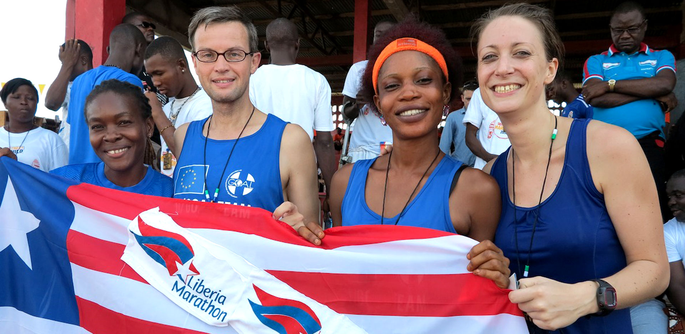
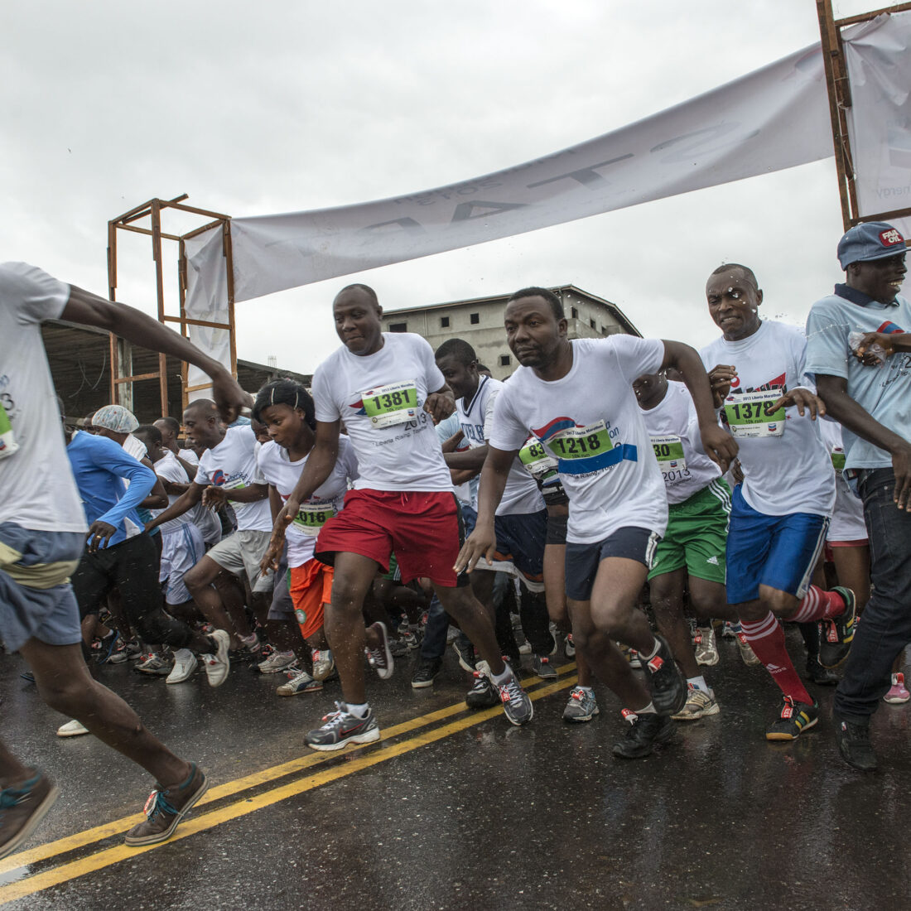

OUR RACE
REPORT 2022 IS OUT!
More than 1,400 runners gathered on August 21, 2022 to take part in Liberia's yet largest road running festival. The 5th edition of the Liberia Marathon included the infamous 10k races (including competitions for athletes in wheelchairs and on crutches), the half marathon distance and of course the master piece - the full marathon.
It was an unforgettable race day - and now it can be relived: The Liberia MArathon 2022 race report features the best stories and moments and provides an unique insight behind the scenes of your favourite road race.
Download it now and share with all your friends!
THE COURSE
Circling Monrovia City, the marathon course has slight changes in elevation and sweeping views of the city and ocean, making it one of the most unique on the international runners circuit.
Located in West Africa on the Atlantic coast, Liberia is known for the historic capital city of Monrovia, beach towns along its sunny coast, abundant natural beautiful landscape, and a wealth of warmth and
Located in West Africa on the Atlantic coast, Liberia is known for the historic capital city of Monrovia, beach towns along its sunny coast, abundant natural beautiful landscape, and a wealth of warmth.